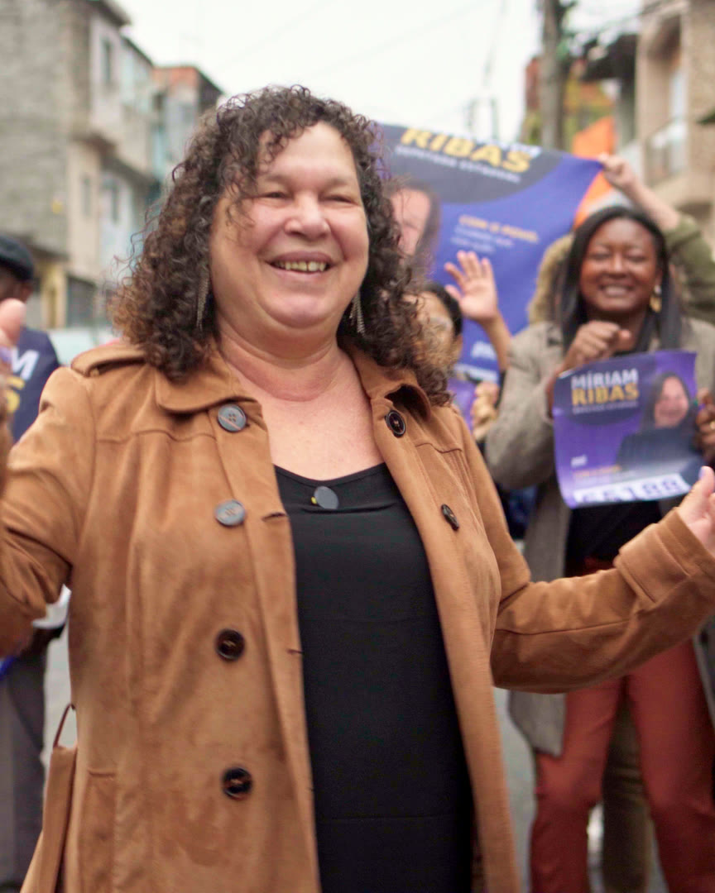

Quem é a Míriam
Uma trajetória marcada pelo cuidado com as pessoas.
Mulher de fé, carinho e atenção, Míriam Ribas construiu sua caminhada em Diadema valorizando o diálogo, a proximidade e o respeito. Há mais de 30 anos, faz do cuidado uma prática diária.

A história
Do interior paulista para Diadema, com a família e o trabalho como bússola
Míriam Ribas nasceu em Inúbia Paulista, no interior de São Paulo, e escolheu Diadema para construir sua vida. São mais de 48 anos na cidade, onde criou os quatro filhos e hoje acompanha o crescimento dos quatro netos. É nessa terra que ela é conhecida, reconhecida e chamada pelo nome.
Bacharel em Direito, Míriam atua há mais de 30 anos no terceiro setor, trabalhando diretamente com pessoas, famílias e comunidades. Ao longo dessa trajetória, acumulou experiência na promoção do cuidado, da proteção social e na criação de oportunidades para quem mais precisa. Como correspondente jurídica, aprendeu a transformar orientação em porta aberta para direitos que muita gente nem sabia que tinha.
O Instituto Míriam Ribas
Fundadora do Instituto Míriam Ribas, ela reuniu em um só lugar iniciativas de saúde, geração de renda, desenvolvimento social e apoio jurídico. O método é simples e exigente: ouvir as pessoas e transformar suas necessidades em iniciativas concretas. Mães solo, famílias em situação de vulnerabilidade, mulheres em busca de autonomia e pessoas que precisavam de um encaminhamento certo encontraram ali acolhimento e resposta.
Da comunidade para a política
Sua atuação política nasceu justamente desse desejo de estar ainda mais perto da comunidade e transformar as necessidades que conhece de perto em ações concretas. A experiência profissional e a vivência junto às pessoas fortaleceram a convicção de que é possível fazer da política um instrumento de cuidado, proteção e transformação social.
Ao longo da caminhada, participou de movimentos e esteve ao lado de lideranças e pessoas que acreditam na construção de uma sociedade mais justa, especialmente na defesa das mulheres, das famílias e da geração de oportunidades. Hoje coordena o PSD Mulher em Diadema, incentivando a participação feminina e a formação de novas lideranças.
Em 2026, ela aceita um novo desafio: representar Diadema, o Grande ABC e a população de São Paulo como deputada estadual, levando para a Assembleia Legislativa uma atuação baseada em escuta, trabalho, responsabilidade e compromisso com as pessoas.
Marcos
Uma vida em movimento
Nasce em Inúbia Paulista, onde aprende cedo o valor da família e do trabalho.
Mais de 48 anos na cidade. É aqui que cria os filhos, constrói amizades e conhece cada bairro.
Bacharel em Direito, passa a atuar como correspondente jurídica e a orientar famílias sobre seus direitos.
Trabalho direto com pessoas, famílias e comunidades na promoção do cuidado e da proteção social.
Funda o Instituto e reúne projetos de saúde, geração de renda, orientação jurídica e apoio às mães.
Assume a coordenação, incentivando a participação feminina e a formação de lideranças.
Leva a experiência de quem conhece de perto os desafios das famílias para a Assembleia Legislativa de São Paulo.
Nas ruas
Onde a campanha acontece de verdade
Feira, praça, calçada. É no corpo a corpo de Diadema que a Míriam ouve, explica e convida cada pessoa a caminhar junto.
{kind=link}
{kind=link}
{kind=link}
Realizações
Projetos que já mudaram vidas
Trabalho concreto, com nome e número, realizado com famílias de Diadema.
Pessoas atendidas
Acolhimento, orientação e encaminhamentos pelo Instituto Míriam Ribas.
Projeto Viva Leite
Pessoas atendidas com alimentação para quem mais precisa.
Colinho Solidário
Kits de enxoval entregues para bebês de famílias em situação de vulnerabilidade.
Geração de renda
Mães beneficiadas com capacitação e caminhos para a autonomia financeira.
Projeto Boa Visão
Famílias auxiliadas no cuidado com a saúde dos olhos.
Homenagem às mães
Eventos para prestigiar as mães, com entrega de mais de 100 lembranças.
Projeto Mãe Solo
Apoio direto às mães que criam os filhos sozinhas, com acolhimento e oportunidades.
Orientação jurídica
Informação e encaminhamento para que as famílias acessem direitos e serviços.
Anos em Diadema
Uma vida inteira ao lado das pessoas da cidade.
“Aceitei esse desafio porque acredito que uma boa política, feita com qualidade, compromisso e respeito pelas pessoas, pode transformar e até salvar vidas. São mais de 30 anos cuidando de pessoas e fortalecendo famílias. Nesse caminho, aprendi o verdadeiro significado da palavra servir.”
Míriam RibasPróxima do povo
Uma mulher que gosta de estar perto das pessoas, ouvir, acolher e ajudar.
Firme e corajosa
Coragem para defender quem mais precisa e firmeza para cobrar resultados.
Técnica e preparada
Formação jurídica e décadas de gestão social para fazer a política funcionar.